صفحه ۱۷۳
کار کارگاهی
طراحی نوار ناوبری
در این کارگاه، نوار ناوبری بوتاسترپ را با قابلیت جمع شدن، به صفحه index.html اضافه خواهید کرد. قبل از انجام این کار، کد مربوط به top-menu را حذف کنید یا آن را بهطور کامل درون علائم `` قرار دهید تا مرورگر محتوای آن را تفسیر نکند.
عملکرد صحیح نوار ناوبری نیازمند فایل bootstrap.bundle.min.js است. اگر این فایل در بخش <head> یا قبل از </body> موجود نیست، آن را مطابق توضیحات استفاده از CDN در صفحه وب به صفحه اضافه کنید و گرنه با کلیک روی دکمه همبرگری (☰)، محتوای آن نمایش داده نخواهد شد.
کدهای شکل زیر را جایگزین عنصر top-menu نمایید:
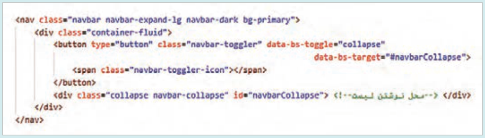
کد بالا شامل دو عنصر «دکمه» و «ناحیه قابل جمع شدن» است. برای ایجاد دکمه از برچسب <button> استفاده شده است. درون این برچسب یک عنصر <span> با کلاس navbar-toggler-icon قرار دارد که موجب نمایش یک آیکن سه خطی میگردد.
محتوای لیست درون یک عنصر نگهدارنده با شناسه navbarCollapse قرار گرفته است. انتظار میرود که با کلیک روی دکمه منو، ناحیه حاوی لیست باز شود. بدین منظور از ویژگی data-bs-target با مقدار #navbarCollapse استفاده شده است.
data-bs-target="#navbarCollapse" شناسه (ID ) منویی را مشخص میکند که باید باز یا بسته شود.
ویژگی data-bs-toggle="collapse" باعث میشود که با کلیک روی دکمه، عمل باز و بسته شدن منو انجام شود.
رنگ نوار ناوبری توسط bg-primary تعیین شده است در صورت تمایل میتوانید از سایر کلاسهای رنگ زمینه استفاده نمایید.
کلاس collapse باعث میشود که محتوای داخل div بهصورت جمعشده (collapsed ) باشد و با دکمه toggle باز/بسته شود. (این کلاس قابلیت باز و بسته شدن محتوا را فعال میکند.)
کلاس navbar-collapse باعث میشود که هنگام باز شدن منو، لینکها بهصورت عمودی (زیر هم) قرار گیرند و مقدار فضای داخلی (padding ) منو بهصورت استاندارد و هماهنگ با سایر اجزای ناوبری باشد. در صورتیکه فقط از collapse استفاده شود لینکهای منو ظاهر نامرتبی خواهند داشت.
صفحه ۱۷۴
کار کارگاهی (ادامه)
حالا نوبت نوشتن لیست عناصر منو است. کد شکل زیر را در محل تعیینشده در کد قبل اضافه کنید:
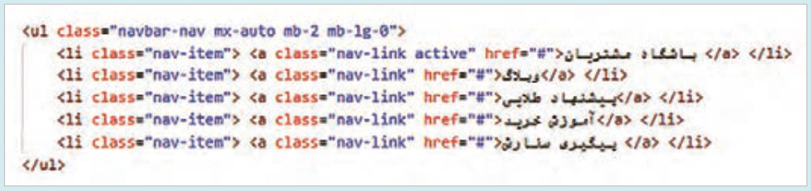
در عنصر والد لیست (ul ) از کلاس navbar-nav و در عناصر لیست از کلاس nav-item استفاده شده است. در حالت پیشفرض گزینههای منوی ناوبری در سمت راست صفحه ظاهر میشود. برای تنظیم حاشیه چپ و راست منو از کلاس mx-auto استفاده شده است.
فایل را ذخیره کنید و نتیجه را در مرورگر بررسی کنید.
کلاس navbar-expand-lg باعث میشود که نوار منو در پهنای بالاتر از 992 پیکسل بهصورت افقی ظاهر گردد. پارامتر lg را به md تبدیل کنید و نتیجه تغییر را بررسی کنید.
در سایتهای فروشگاهی، منوی ناوبری در نمای موبایل و تبلت پنهان میشود، کلاسهای d-none و d-md-block را به عنصر nav اضافه کنید و نتیجه را در نمای موبایل و تبلت بررسی کنید.
گزینه اول اغلب سایتهای فروشگاهی «دستهبندی محصولات» است که حاوی لیستی از طبقهبندی محصولات میباشد. برای ایجاد این گزینه، کد شکل زیر را قبل از اولین عنصر لیست فوق (باشگاه مشتریان) اضافه کنید:
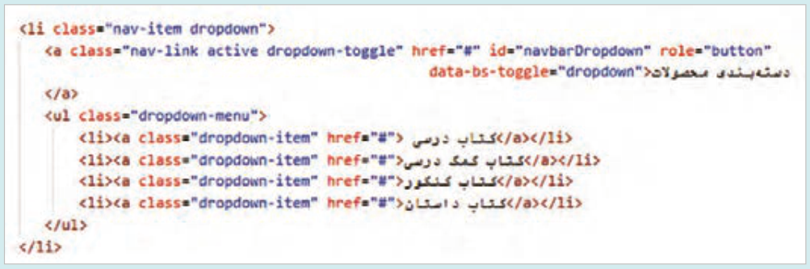
nav-item : برای هر یک از گزینههای منو بهکار میرود.
صفحه ۱۷۵
کار کارگاهی (ادامه)
dropdown : این کلاس برای عنصر حاوی زیرمنو بهکار میرود.
nav-link : برای استایلدهی به لینکهای نوار ناوبری (Navbar ) استفاده میشود و لینک را مطابق استایل Navbar نمایش میدهد.
active : این کلاس ظاهر یک گزینه را متفاوت (ضخیمتر) از سایر گزینهها نمایش میدهد و بهمعنای فعال بودن یک گزینه است.
dropdown-toggle : این کلاس به جاوااسکریپت بوتاسترپ اطلاع میدهد که این عنصر قابلیت باز و بسته شدن دارد، همچنین یک فلش کوچک ▼در کنار گزینه منو اضافه میکند که بهمعنای داشتن زیر منو است.
data-bs-toggle="dropdown": برای فعالسازی عملکرد دو حالته منو (باز و بسته) کاربرد دارد. dropdown-menu : این کلاس معمولاً برای عنصر <ul> بهکار میرود و باعث میشود که محتوای لیست بهصورت یک جعبه پنهان در زیر گزینه منو قرار گیرد.
dropdown-item : برای تعیین استایل هر یک از گزینههای منوی کشویی کاربرد دارد.
کلاس active را از گزینه اول لیست مرحلۀ قبل(باشگاه مشتریان)، حذف کنید. فایل را ذخیره کنید. انتظار میرود که نتیجۀ زیر حاصل شود:
همانطورکه گفته شد، کلاس dropdown-toggle باعث نمایش فلش رو به پایین میشود. در صورت تمایل میتوانید آن را حذف کنید، اما لازم است که با افزودن استایل زیر، نمایش زیرمنو را در حالت hover فعال کنید:
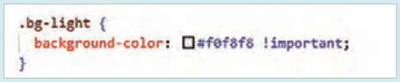
نکته
با توجه به اینکه رویداد hover در نمای موبایل اتفاق نمیافتد، پس این کد فقط در نمای دسکتاپ عمل میکند.
دکمهها
دکمه یکی از عناصر تعاملی صفحه است که امکان انجام یک عملیات را با کلیک کاربر فراهم میکند. ایجاد دکمه در صفحه وب از طریق سه برچسب زیر امکان پذیر است:
<button>
<input>
<a>
صفحه ۱۷۶
در بوتاسترپ، کلاسهای مختلفی برای استایلدهی به دکمهها وجود دارد. این کلاسها به شما امکان میدهند تا ظاهر دکمهها را از نظر رنگ، اندازه، و سایر ویژگیها سفارشی کنید. برای تعیین ظاهر دکمه توسط کلاسهای بوتاسترپ، استفاده از کلاس btn ضروری است. برای انتخاب رنگ و اندازه دکمه میتوان کلاسهای دیگر مربوط به دکمه را نیز به کلاس btn اضافه نمود.
این کلاس بهصورت خلاصه در جدول ۱۱ آمده است:
جدول ۱۱: کلاسهای دکمه در بوت استرپ
نوع کلاس
نام کلاسها
رنگ
btn-primary ، btn-secondary ، btn-danger ، btn-light ، btn-dark ، btn-link و ...
خط دور دکمهها
btn-outline-primary ، btn-outline-secondary و ....
اندازه دکمهها
btn-sm ، btn-lg
وضعیت غیرفعال
disabled
مثال
در مثال زیر شش دکمه با برچسبها و کلاسهای مختلف ایجاد شده است:
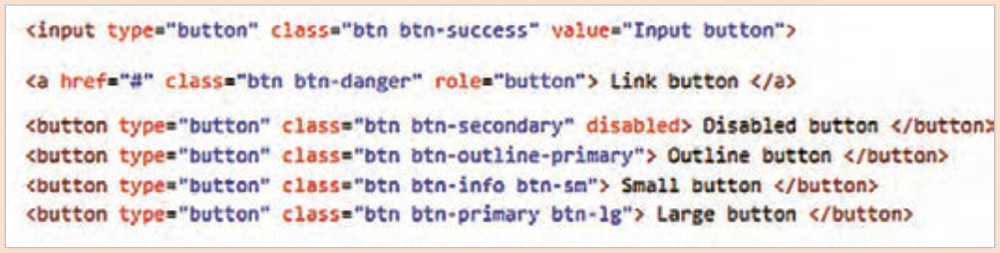
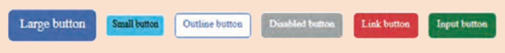
بیشتر بدانید
طرحبندی صفحه اختصاصی محصول
در این کارگاه، صفحه نمایش اطلاعات محصول را در سه ستون حاوی تصویر محصول، ویژگیهای محصول و قیمت محصول طراحی خواهید کرد. در این صفحه بخش header و footer مشابه فایل index.html است، فقط در بخش main دارای محتوای متفاوت است. جهت سرعت گرفتن کار طراحی، یک کپی از فایل index.html ایجاد کنید. برای این کار فایل index.html را در ویرایشگر متنی باز کنید. از منوی File گزینه Save As را انتخاب کنید و سپس عبارت product-details.html را بهعنوان نام صفحه بنویسید.
صفحه ۱۷۷
بیشتر بدانید (ادامه)
محتوای برچسب <main> را بهطور کامل پاک کنید. فایل را ذخیره کنید و صفحه product-details را در مرورگر به نمایش بگذارید تا از درستی عملکرد خود اطمینان حاصل کنید. در این مرحله صفحه product-details باید حاوی نوار بنر بالای صفحه، نوار لوگو، نوار ناوبری و فوتر باشد.
کد شکل زیر را برای طرحبندی صفحۀ محصول درون برچسب <main> بنویسید:
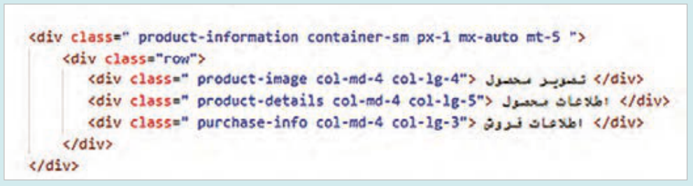
در این طرحبندی از سیستم Grid استفاده شده است. سهم ستونها در دستگاههای 992 پیکسل و بزرگتر برابر 4/12، 5/12 و 3/12 است. در پهنای 768 تا 992 پیکسل سهم هر ستون برابر 4/12 است و در دستگاههای کوچکتر محتوای ستونها روی هم قرار میگیرند.
پهنای عنصر product-information را به شکل زیر در فایل styles.css تعریف کنید:
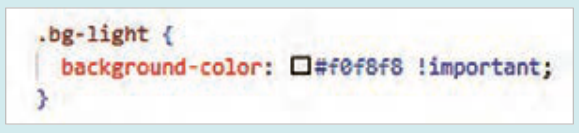
تصویر کتاب «دانش فنی پایه» را به شکل زیر به ستون اول اضافه کنید:
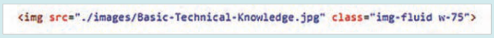
برای اینکه تصویر محصول در تمام دستگاهها در وسط ستون قرار گیرد، کلاسهای d-flex ، justify-content-center و align-items-center را به ستون اول، بعد از کلاس col-lg-4 اضافه کنید:
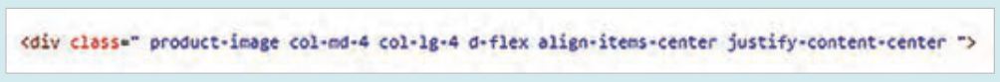
برای اینکه اندازۀ تصویر در دستگاههای کوچکتر از 768 پیکسل کنترل شود، استایل زیر را به فایل styles.css اضافه کنید:
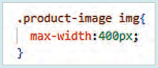
صفحه ۱۷۸
بیشتر بدانید (ادامه)
محتوای ستون دوم را بهصورت شکل زیر بنویسید:
کلاس fs-3 اندازه متن و کلاس text-sm-end تراز متن را (در سمت راست ستون) تعیین میکند.
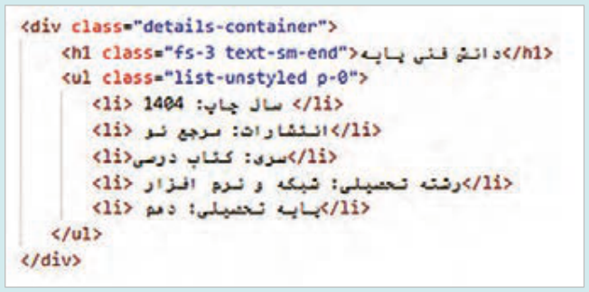
استایل محتوای ستون دوم را مطابق شکل زیر تنظیم کنید:
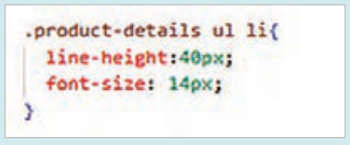
در نمای موبایل، محتوای ستون دوم به لبۀ سمت راست مرورگر میچسبد و جلوه خوشایندی ندارد. برای اینکه محتوا از سمت راست فاصله بگیرد، بهطوریکه در وسط ستون قرار گیرد، محتوای ستون دوم، درون عنصر div با کلاس details-container قرار گرفته است. ویژگیهای این عنصر را مطابق شکل زیر تنظیم کنید:
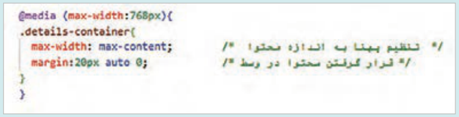
کد نوشته شده در شکل زیر را درون ستون سوم وارد کنید:
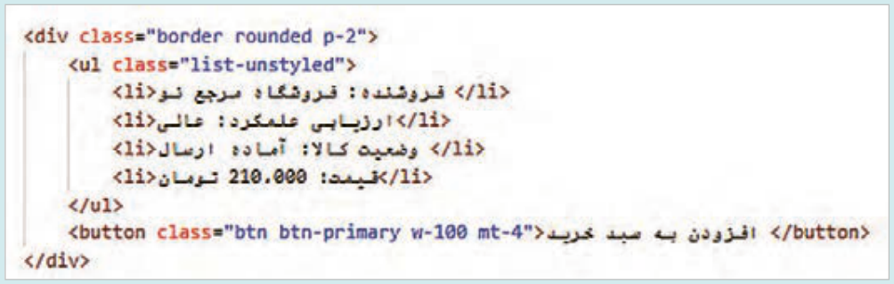
صفحه ۱۷۹
بیشتر بدانید (ادامه)
استایل محتوای ستون سوم را به مطابق شکل زیر بنویسید:
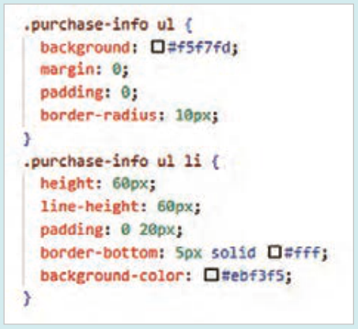
انتظار میرود که نتیجۀ کار در دستگاههای 992 پیکسل و بزرگتر به شکل زیر باشد:
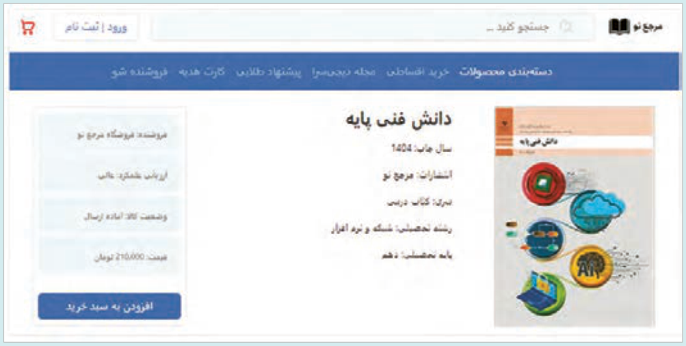
فعالیت
در فایل index.html محصول «دانش فنی پایه» را به صفحۀ product-details.html پیوند دهید.
فرمها
فرمهای ورود اطلاعات، ابزارهایی برای تعامل کاربر با صفحه و جمعآوری اطلاعات هستند. ظاهر فرمهای ورود، نقشی حیاتی در تجربۀ کاربری و موفقیت یک وبسایت دارد. فرمهای جذاب و کاربرپسند، باعث افزایش تعامل کاربران و ایجاد حس اعتماد و رضایت میشوند. در مقابل، فرمهای نامرتب و گیجکننده میتوانند منجر به سردرگمی کاربران، افزایش نرخ خروج از صفحه و در نهایت کاهش اعتبار وبسایت شوند.
Page 173
Workshop
Designing the navigation bar
In this workshop you will add Bootstrap's collapsible navigation bar to the page index.html. Before doing this, remove the top-menu code or put it completely inside `` so that the browser does not interpret it.
The navigation bar needs the file bootstrap.bundle.min.js to work correctly. If this file is not in the <head> part or before </body>, add it as explained in «Using a CDN in a web page»; otherwise clicking the hamburger button (☰) will not show its content.
Replace the top-menu element with the code in the figure below:
The code above has two elements: a «button» and a «collapsible area». The button is created with the <button> tag. Inside it is a <span> element with the class navbar-toggler-icon, which shows a three-line icon.
The list content is in a container with the ID navbarCollapse. Clicking the menu button should open the area holding the list. For this, the data-bs-target attribute is used with the value #navbarCollapse.
data-bs-target="#navbarCollapse" gives the ID of the menu to open or close.
The attribute data-bs-toggle="collapse" makes the menu open and close when the button is clicked.
The color of the navigation bar is set with bg-primary; if you like, you can use other background color classes.
The collapse class makes the content inside the div collapsed (collapsed), and the toggle button opens/closes it. (This class turns on opening and closing of the content.)
The navbar-collapse class puts the links vertically (one under another) when the menu opens and gives the menu standard padding (padding) that matches the other navigation parts. If only collapse is used, the menu links look messy.
Page 174
Workshop (continued)
Now it is time to write the list of menu items. Add the code in the figure below at the marked place in the previous code:
The list's parent element (ul) uses the navbar-nav class, and the list items use the nav-item class. By default the navigation menu options appear on the right of the page. The mx-auto class is used to set the left and right margins of the menu.
Save the file and check the result in the browser.
navbar-expand-lg makes the menu bar horizontal at widths above 992 pixels. Change lg to md and check the result.
In shopping sites, the navigation menu is hidden in the mobile and tablet views; add the classes d-none and d-md-block to the nav element and check the result in the mobile and tablet views.
Curiosity
What effect does the active class, applied only to the first option, have on how that option looks?
The first option of most shopping sites is «Product categories», which holds a list of product groups. To create this option, add the code in the figure below before the first item of the list above (Customer club):
nav-item: used for each menu option.
Page 175
Workshop (continued)
dropdown: used for the element that holds a submenu.
nav-link: used to style the links of the navigation bar (Navbar) so they look like the Navbar.
active: shows an option differently (bolder) from the others and means the option is active.
dropdown-toggle: tells Bootstrap's JavaScript that this element can open and close, and adds a small arrow ▼ next to the menu option to show it has a submenu.
data-bs-toggle="dropdown": turns on the two-state (open and closed) behavior of the menu. dropdown-menu: usually used on the <ul> element; it makes the content of the list a hidden box under the menu option.
dropdown-item: sets the style of each option of the drop-down menu.
Remove the active class from the first option of the list in the previous step (Customer club). Save the file. You should get the result below:
As mentioned, the dropdown-toggle class shows a downward arrow. You can remove it if you like, but then you need to add the style below to open the submenu on hover:
Note
Since hover does not happen in the mobile view, this code works only in the desktop view.
Buttons
A button is one of the interactive elements of a page; clicking it carries out an action. A button can be created in a web page with the three tags below:
<button>
<input>
<a>
Page 176
Bootstrap has different classes for styling buttons. They let you customize the color, size, and other features of buttons. To style a button with Bootstrap classes, the btn class is required; to choose the button's color and size, other button classes can be added alongside btn.
These classes are summarized in Table 11:
Table 11: Button classes in Bootstrap
Kind of class
Class names
Color
btn-primary, btn-secondary, btn-danger, btn-light, btn-dark, btn-link, and so on
Button borders
btn-outline-primary, btn-outline-secondary, and so on
Button sizes
btn-sm, btn-lg
Disabled state
disabled
Example
In the example below, six buttons are created with different tags and classes:
Learn more
Laying out a product page
In this workshop you will design a product information page in three columns: the product image, the product features, and the product price. The header and footer of this page are the same as in the file index.html; only the main part has different content. To speed up the design, make a copy of index.html: open index.html in the text editor, choose Save As from the File menu, and type product-details.html as the page name.
Page 177
Learn more (continued)
Delete the whole content of the <main> tag. Save the file and open the product-details page in the browser to make sure everything works. At this stage the product-details page should have the banner at the top, the logo bar, the navigation bar, and the footer.
Write the code in the figure below inside the <main> tag to lay out the product page:
This layout uses the Grid system. On devices 992 pixels or wider, the columns take 4/12, 5/12, and 3/12. At widths of 768 to 992 pixels each column takes 4/12, and on smaller devices the contents of the columns are stacked.
Define the width of the product-information element in the file styles.css as below:
Add the image of the book «Basic Technical Knowledge» to the first column as below:
So that the product image sits in the middle of the column on all devices, add the classes d-flex, justify-content-center, and align-items-center to the first column, after the col-lg-4 class:
To control the size of the image on devices narrower than 768 pixels, add the style below to the file styles.css:
Page 178
Learn more (continued)
Write the content of the second column as in the figure below:
The fs-3 class sets the text size, and the text-sm-end class sets the text alignment (on the right of the column).
Set the style of the second column's content as in the figure below:
In the mobile view, the content of the second column sticks to the right edge of the browser and does not look good. To move the content away from the right side so that it sits in the middle of the column, the content of the second column is put inside a div element with the class details-container. Set the properties of this element as in the figure below:
Enter the code written in the figure below inside the third column:
Page 179
Learn more (continued)
Write the style of the third column's content as in the figure below:
On devices 992 pixels or wider the result should look like this:
Activity
In the file index.html, link the product «Basic Technical Knowledge» to the page product-details.html.
Forms
Data-entry forms are tools for users to interact with the page and for collecting information. The look of forms plays a vital role in the user experience and in a website's success. Attractive, user-friendly forms increase user interaction and build trust and satisfaction. Messy, confusing forms, on the other hand, can confuse users, raise the bounce rate, and in the end lower the website's credibility.